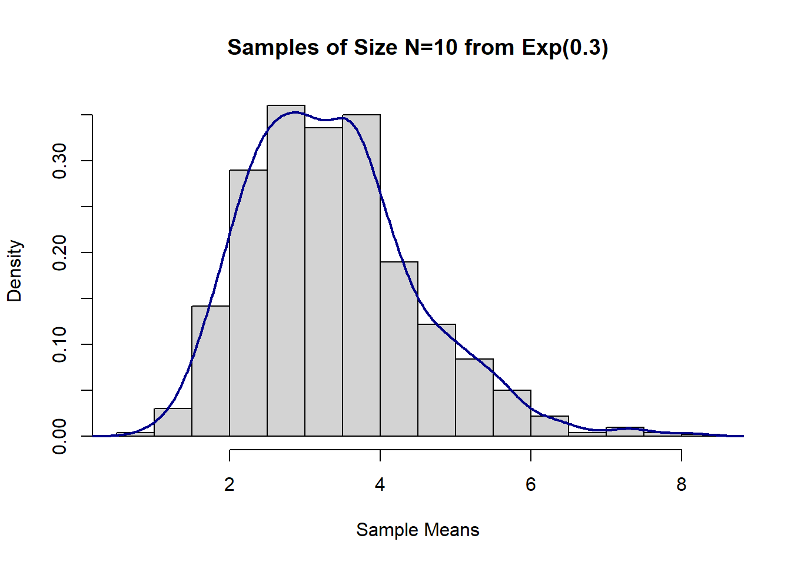
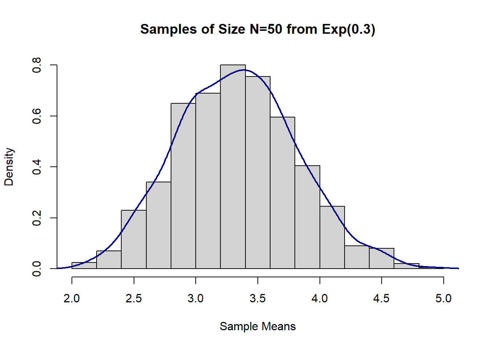
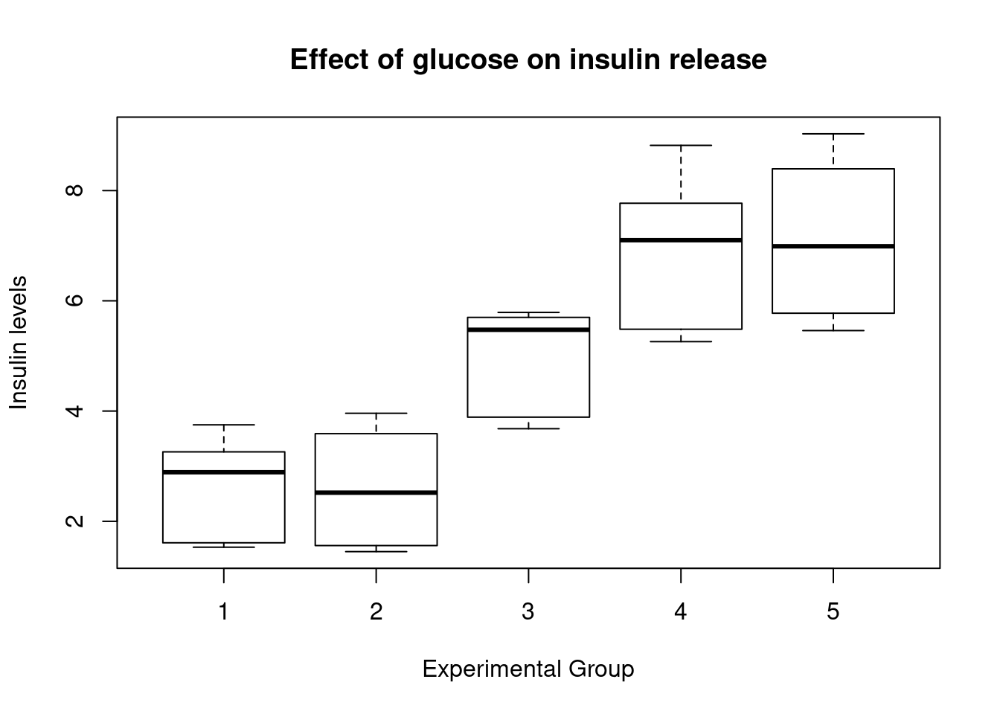
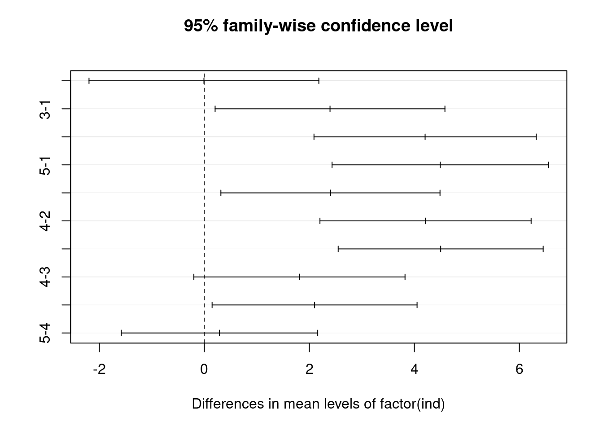
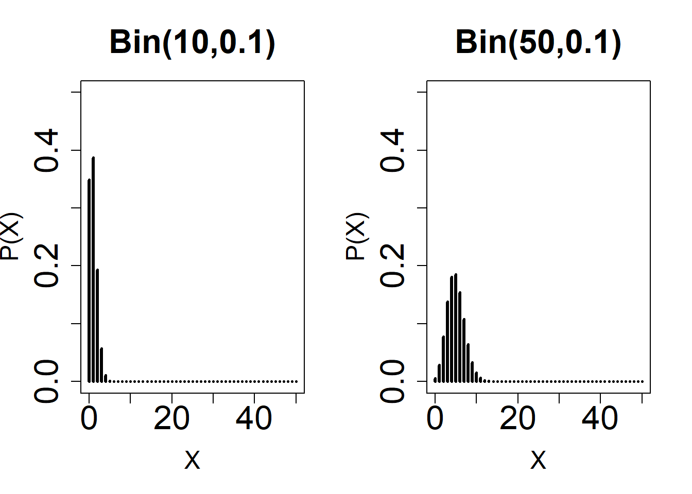
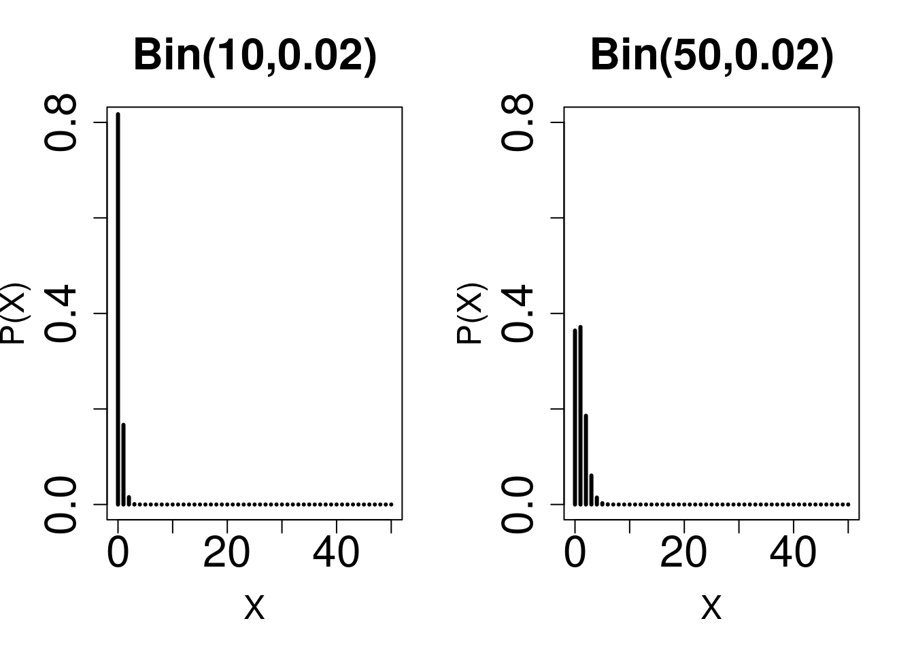
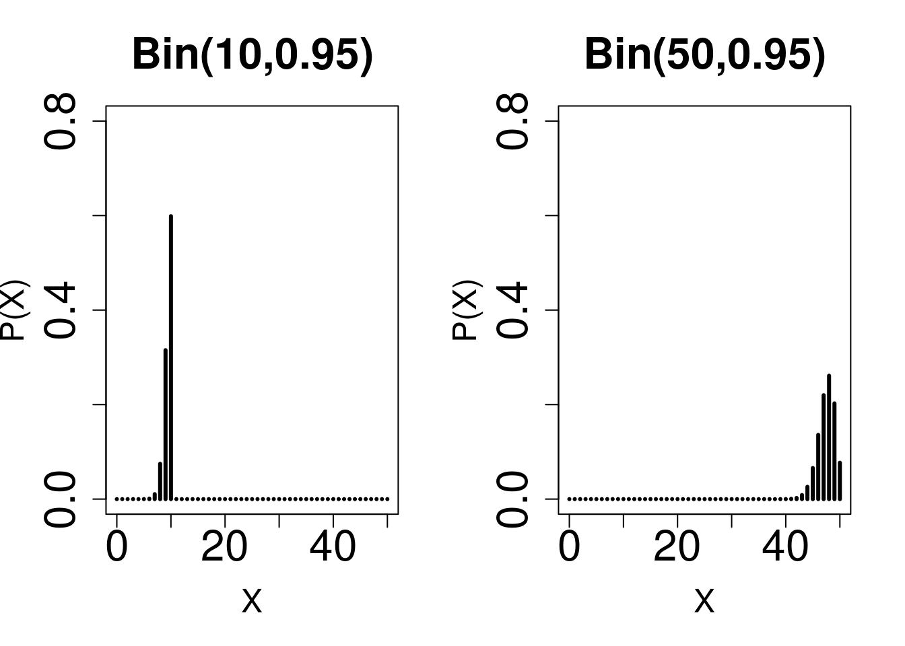

R Code for hypothesis testing
Jeffrey Liang
10/29/2020
Distribution
Binomial
\(P(\mathcal{X}=k)\ = {n \choose k}p^k(1-p)^{n-k}\)
rbinom(5,10,0.3)
## [1] 1 1 4 0 1
qbinom(0.05,10,0.3)
## [1] 1
pbinom(1,10,0.3)
## [1] 0.1493083
dbinom(1,10,0.3)
## [1] 0.1210608Normal Distribution
\(P(\mathcal{X}=k)\ = \frac{1}{\sqrt{2\pi}\sigma}*e^{-\frac{(x-\mu)^2}{2\sigma^2}}\)
rnorm(5)
## [1] 0.78167769 1.39261441 0.71862449 0.04145689 -0.18407711
qnorm(0.05)
## [1] -1.644854
pnorm(1.96)
## [1] 0.9750021
dnorm(1.96)
## [1] 0.05844094Descriptive Statistics
Table
################################################################
# Biostatistical Methods I #
# Descriptive Statistics #
# Author: Cody Chiuzan #
################################################################
# Library 'arsenal' is used for descriptive statistics tables
# Library 'dplyr' has nice functions for data manipulation, also mutate()
# Library 'ggplot2' is used for graphing
library(arsenal)
library(dplyr)
library(ggplot2)
#########################################################################
# Import Data #
#########################################################################
# Set working directory
low_birth_all <- read.csv(here::here("R_Code/R - Module 2/lowbwt_ALL.csv"))
names(low_birth_all)## [1] "low" "age" "lwt" "race" "smoke" "ht" "ui" "ftv" "ptl"
## [10] "bwt"head(low_birth_all)## low age lwt race smoke ht ui ftv ptl bwt
## 1 0 19 182 black 0 0 1 0 0 2523
## 2 0 33 155 other 0 0 0 1 0 2551
## 3 0 20 105 white 1 0 0 1 0 2557
## 4 0 21 108 white 1 0 1 1 0 2594
## 5 0 18 107 white 1 0 1 0 0 2600
## 6 0 21 124 other 0 0 0 0 0 2622dim(low_birth_all)## [1] 189 10summary(low_birth_all)## low age lwt race smoke
## Min. :0.0000 Min. :14.00 Min. : 80.0 black:26 Min. :0.0000
## 1st Qu.:0.0000 1st Qu.:19.00 1st Qu.:110.0 other:67 1st Qu.:0.0000
## Median :0.0000 Median :23.00 Median :121.0 white:96 Median :0.0000
## Mean :0.3122 Mean :23.24 Mean :129.7 Mean :0.3915
## 3rd Qu.:1.0000 3rd Qu.:26.00 3rd Qu.:140.0 3rd Qu.:1.0000
## Max. :1.0000 Max. :45.00 Max. :250.0 Max. :1.0000
## ht ui ftv ptl
## Min. :0.00000 Min. :0.0000 Min. :0.0000 Min. :0.0000
## 1st Qu.:0.00000 1st Qu.:0.0000 1st Qu.:0.0000 1st Qu.:0.0000
## Median :0.00000 Median :0.0000 Median :0.0000 Median :0.0000
## Mean :0.06349 Mean :0.1481 Mean :0.4709 Mean :0.1587
## 3rd Qu.:0.00000 3rd Qu.:0.0000 3rd Qu.:1.0000 3rd Qu.:0.0000
## Max. :1.00000 Max. :1.0000 Max. :1.0000 Max. :1.0000
## bwt
## Min. : 709
## 1st Qu.:2414
## Median :2977
## Mean :2945
## 3rd Qu.:3475
## Max. :4990str(low_birth_all)## 'data.frame': 189 obs. of 10 variables:
## $ low : int 0 0 0 0 0 0 0 0 0 0 ...
## $ age : int 19 33 20 21 18 21 22 17 29 26 ...
## $ lwt : int 182 155 105 108 107 124 118 103 123 113 ...
## $ race : Factor w/ 3 levels "black","other",..: 1 2 3 3 3 2 3 2 3 3 ...
## $ smoke: int 0 0 1 1 1 0 0 0 1 1 ...
## $ ht : int 0 0 0 0 0 0 0 0 0 0 ...
## $ ui : int 1 0 0 1 1 0 0 0 0 0 ...
## $ ftv : int 0 1 1 1 0 0 1 1 1 0 ...
## $ ptl : int 0 0 0 0 0 0 0 0 0 0 ...
## $ bwt : int 2523 2551 2557 2594 2600 2622 2637 2637 2663 2665 ...# Check for missing values
anyNA(low_birth_all)## [1] FALSEfilter(low_birth_all, is.na(age))## [1] low age lwt race smoke ht ui ftv ptl bwt
## <0 rows> (or 0-length row.names)# Some details about the data: 189 births info were collected at a medical center.
# The dataset contains the following 10 variables:
# low: indicator of birth weight less than 2.5kg
# age: mother's age in years
# lwt: mother's weight in pounds at last menstrual period
# race: mothers race ("white", "black", "other")
# smoke: smoking status during pregnancy (yes/no)
# ht: history of hypertension (yes/no)
# ui: presence of uterine irritability (yes/no)
# ftv: physician visit during the first trimester (yes/no)
# ptl: previous premature labor (yes/no)
# bwt: birth weight in grams
#########################################################################
# Descriptive Statistics: Continuous Variables #
#########################################################################
mean(low_birth_all$age) # Mean## [1] 23.2381median(low_birth_all$age) # Median## [1] 23sd(low_birth_all$age) # Standard Deviation## [1] 5.298678quantile(low_birth_all$age) # Min, 25ht, 50th, 75th, Max## 0% 25% 50% 75% 100%
## 14 19 23 26 45quantile(low_birth_all$age, c(0.10, 0.30, 0.60)) # Tertiles## 10% 30% 60%
## 17 20 24# A more condensed way to obtain summary statistics
summary(low_birth_all$age)## Min. 1st Qu. Median Mean 3rd Qu. Max.
## 14.00 19.00 23.00 23.24 26.00 45.00# Summary statistics for each level of another categorical variable
mean <- tapply(low_birth_all$bwt, low_birth_all$race, mean)
sd <- tapply(low_birth_all$bwt, low_birth_all$race, sd)
med <- tapply(low_birth_all$bwt, low_birth_all$race, median)
min <- tapply(low_birth_all$bwt, low_birth_all$race, min)
max <- tapply(low_birth_all$bwt, low_birth_all$race, max)
cbind(mean, sd, med, min, max)## mean sd med min max
## black 2719.692 638.6839 2849 1135 3860
## other 2804.015 721.3011 2835 709 4054
## white 3103.740 727.7242 3076 1021 4990# Use function tableby() from library 'arsenal' to create a summary table (called Table 1 in publications)
# Use continuous and categorical variables
# First table - not ideal
tab1 <- tableby(~ age + bwt + smoke, data = low_birth_all)
summary(tab1)##
##
## | | Overall (N=189) |
## |:---------------------------|:------------------:|
## |**age** | |
## | Mean (SD) | 23.238 (5.299) |
## | Range | 14.000 - 45.000 |
## |**bwt** | |
## | Mean (SD) | 2944.656 (729.022) |
## | Range | 709.000 - 4990.000 |
## |**smoke** | |
## | Mean (SD) | 0.392 (0.489) |
## | Range | 0.000 - 1.000 |# Change variable names/labels
my_labels <-
list(
age = "Age(yrs)",
bwt = "Birthweight(g)",
smoke = "Smoker",
race = "Race"
)
# Clean the output
my_controls <- tableby.control(
total = T,
test = F,
# No test p-values yet
numeric.stats = c("meansd", "medianq1q3", "range", "Nmiss2"),
cat.stats = c("countpct", "Nmiss2"),
stats.labels = list(
meansd = "Mean (SD)",
medianq1q3 = "Median (Q1, Q3)",
range = "Min - Max",
Nmiss2 = "Missing",
countpct = "N (%)"
)
)
# Make 'smoke' a factor to show N (%)
birth_df <- low_birth_all %>%
mutate(smoke = factor(smoke, labels = c("No", "Yes"))) # Start labeling with 0 (increasing order)
# Second table
tab2 <-
tableby(~ age + bwt + smoke, data = birth_df, control = my_controls)
summary(tab2,
title = "Descriptive Statistics: Lowbirth Data",
labelTranslations = my_labels,
text = T)##
## Table: Descriptive Statistics: Lowbirth Data
##
## | | Overall (N=189) |
## |:------------------|:-----------------------------:|
## |Age(yrs) | |
## |- Mean (SD) | 23.238 (5.299) |
## |- Median (Q1, Q3) | 23.000 (19.000, 26.000) |
## |- Min - Max | 14.000 - 45.000 |
## |- Missing | 0 |
## |Birthweight(g) | |
## |- Mean (SD) | 2944.656 (729.022) |
## |- Median (Q1, Q3) | 2977.000 (2414.000, 3475.000) |
## |- Min - Max | 709.000 - 4990.000 |
## |- Missing | 0 |
## |Smoker | |
## |- No | 115 (60.8%) |
## |- Yes | 74 (39.2%) |
## |- Missing | 0 |# Tabulation by race categories
tab3 <-
tableby(race ~ age + bwt + smoke, data = birth_df, control = my_controls)
summary(tab3,
title = "Descriptive Statistics: Lowbirth Data",
labelTranslations = my_labels,
text = T)##
## Table: Descriptive Statistics: Lowbirth Data
##
## | | black (N=26) | other (N=67) | white (N=96) | Total (N=189) |
## |:------------------|:-----------------------------:|:-----------------------------:|:-----------------------------:|:-----------------------------:|
## |Age(yrs) | | | | |
## |- Mean (SD) | 21.538 (5.109) | 22.388 (4.536) | 24.292 (5.655) | 23.238 (5.299) |
## |- Median (Q1, Q3) | 20.500 (17.250, 24.000) | 22.000 (19.000, 25.000) | 23.500 (20.000, 29.000) | 23.000 (19.000, 26.000) |
## |- Min - Max | 15.000 - 35.000 | 14.000 - 33.000 | 14.000 - 45.000 | 14.000 - 45.000 |
## |- Missing | 0 | 0 | 0 | 0 |
## |Birthweight(g) | | | | |
## |- Mean (SD) | 2719.692 (638.684) | 2804.015 (721.301) | 3103.740 (727.724) | 2944.656 (729.022) |
## |- Median (Q1, Q3) | 2849.000 (2370.500, 3057.000) | 2835.000 (2313.000, 3274.000) | 3076.000 (2584.750, 3651.000) | 2977.000 (2414.000, 3475.000) |
## |- Min - Max | 1135.000 - 3860.000 | 709.000 - 4054.000 | 1021.000 - 4990.000 | 709.000 - 4990.000 |
## |- Missing | 0 | 0 | 0 | 0 |
## |Smoker | | | | |
## |- No | 16 (61.5%) | 55 (82.1%) | 44 (45.8%) | 115 (60.8%) |
## |- Yes | 10 (38.5%) | 12 (17.9%) | 52 (54.2%) | 74 (39.2%) |
## |- Missing | 0 | 0 | 0 | 0 |#########################################################################
# Descriptive Statistics: Categorical Variables #
#########################################################################
tbl <-
table(low_birth_all$smoke, low_birth_all$race) # Two-way table
tbl##
## black other white
## 0 16 55 44
## 1 10 12 52prop.table(tbl, 1) # Row proportions##
## black other white
## 0 0.1391304 0.4782609 0.3826087
## 1 0.1351351 0.1621622 0.7027027prop.table(tbl, 2) # Column proportions##
## black other white
## 0 0.6153846 0.8208955 0.4583333
## 1 0.3846154 0.1791045 0.5416667# 3-way cross-tabulation
xtabs( ~ race + smoke + ht, data = low_birth_all)## , , ht = 0
##
## smoke
## race 0 1
## black 14 9
## other 51 12
## white 43 48
##
## , , ht = 1
##
## smoke
## race 0 1
## black 2 1
## other 4 0
## white 1 4T-Test
One Group
################################################################
# Biostatistical Methods I #
# Statistical Inference: One-Sample Mean #
# Author: Cody Chiuzan #
################################################################
############################################################
# Sample mean distributions: CLT #
############################################################
# Draw 1000 samples of size 10 from an underlying exponential distribution with parameter lambda=0.3
# Calculate their means/var and draw a histogram to vizualize the sample means distribution
set.seed(2)
sample_means_exp1 = rep(NA, 1000)
for (i in 1:1000) {
sample_means_exp1[i] = mean(rexp(10, 0.3))
}
# sample_means_exp
# Calculate the means and the variances of all samples
mean(sample_means_exp1) # compare to true Mean = 1/lambda## [1] 3.360129var(sample_means_exp1) # compare to true Var=1/lambda^2## [1] 1.261384#Histogram
hist(sample_means_exp1,
main = "Samples of Size N=10 from Exp(0.3)",
xlab = "Sample Means",
prob = T)
lines(density(sample_means_exp1), col = "darkblue", lwd = 2)
# Draw 1000 samples of size 50 from an underlying exponential distribution with parameter lambda=0.3
# Calculate their means/var and draw a histogram to vizualize the sample means distribution
set.seed(2)
sample_means_exp2 = rep(NA, 1000)
for (i in 1:1000) {
sample_means_exp2[i] = mean(rexp(50, 0.3))
}
# Calculate the means and the variances of all samples
mean(sample_means_exp2) # compare to true Mean = 1/lambda## [1] 3.330665var(sample_means_exp2) # compare to true Var=1/lambda^2## [1] 0.2316242#Histogram
hist(sample_means_exp2,
main = "Samples of Size N=50 from Exp(0.3)",
xlab = "Sample Means",
prob = T)
lines(density(sample_means_exp2), col = "darkblue", lwd = 2)
# Construct a 95% CI for the population mean with n=10, X_bar=175, and known sigma=15
# Sigma represents the pooulation standard deviation
# 1-(alpha/2)=1-(0.05/2)=0.975
LCLz95 <- 175 - qnorm(0.975) * 15 / sqrt(10)
UCLz95 <- 175 + qnorm(0.975) * 15 / sqrt(10)
CLz95 <- c(LCLz95, UCLz95)
CLz95## [1] 165.7031 184.2969# What if we want a 99% CI?
LCLz99 <- 175 - qnorm(0.995) * 15 / sqrt(10)
UCLz99 <- 175 + qnorm(0.995) * 15 / sqrt(10)
CLz99 <- c(LCLz99, UCLz99)
CLz99## [1] 162.7818 187.2182# Construct a 95% CI for the population mean with n=10 => df=10-1=9, X_bar=175, and known s=15
# s represents the sample standard deviation
LCLt95 <- 175 - qt(0.975, df = 9) * 15 / sqrt(10)
UCLt95 <- 175 + qt(0.975, df = 9) * 15 / sqrt(10)
CLt95 <- c(LCLt95, UCLt95)
CLt95## [1] 164.2696 185.7304# Construct a 95% CI for the population variance with known s=15
# s represents the sample standard deviation
LCL_var95 <- 9 * (15 ^ 2) / qchisq(0.975, 9)
UCL_var95 <- 9 * (15 ^ 2) / qchisq(0.025, 9)
CL_var95 <- c(LCL_var95, UCL_var95)
CL_var95## [1] 106.4514 749.8918# Hypothesis Test: Infarct size example
# Test if the mean infract size is different from 25
# X_bar=16, s=10, N=40
t_stats <- (16 - 25) / (10 / sqrt(40))
t_stats## [1] -5.6921# Compare the test statistics with the critical value, alpha=0.05
qt(0.975, 39) # 2.02## [1] 2.022691# Compute the p-value: t_stats<0, so the p-value is twice area to the left of a t distr. with 39 df
p.val <- 2 * pt(t_stats, 39) # p.val<.0001, reject H0.
# Remember the low_birth data
low_birth_all <-
read.csv(here::here("R_Code/R - Module 2/lowbwt_ALL.csv"))
# Let's test if the true mean is different than 3000g
# One-sample t-test, two-tailed
t.test(low_birth_all$bwt, alternative = 'two.sided', mu = 3000)##
## One Sample t-test
##
## data: low_birth_all$bwt
## t = -1.0437, df = 188, p-value = 0.298
## alternative hypothesis: true mean is not equal to 3000
## 95 percent confidence interval:
## 2840.049 3049.264
## sample estimates:
## mean of x
## 2944.656# Output from R
# One Sample t-test
# t = -1.0437, df = 188, p-value = 0.298 ----> Fail to reject H0.
# alternative hypothesis: true mean is not equal to 3000
# 95 percent confidence interval: 2840.049 3049.264
# sample estimates: mean of x is 2944.656
# Let's test if the true mean is less than 3000g
# One-sample t-test, one-tailed
t.test(low_birth_all$bwt, alternative = 'less', mu = 3000)##
## One Sample t-test
##
## data: low_birth_all$bwt
## t = -1.0437, df = 188, p-value = 0.149
## alternative hypothesis: true mean is less than 3000
## 95 percent confidence interval:
## -Inf 3032.312
## sample estimates:
## mean of x
## 2944.656# Output from R
# t = -1.0437, df = 188, p-value = 0.149 ----> Fail to reject H0.
# alternative hypothesis: true mean is less than 3000
# 95 percent confidence interval: -Inf 3032.312 (One-sided confidence interval)
# sample estimates: mean of x is 2944.656 Two Group
################################################################
# Biostatistical Methods I #
# Statistical Inference: Two-Sample Means #
# Author: Cody Chiuzan; Date: Sept 23, 2019 #
################################################################
rm(list = ls())
###########################################################################
# Conduct a two-sample paired t-test to assess the effect of a new diet #
###########################################################################
weight_before <- c(201, 231, 221, 260, 228, 237, 326, 235, 240, 267, 284, 201)
weight_after <- c(200, 236, 216, 233, 224, 216, 296, 195, 207, 247, 210, 209)
weight_diff <- weight_after - weight_before
sd_diff <- sd(weight_diff)
test_weight <- mean(weight_diff) / (sd_diff / sqrt(length(weight_diff)))
# Use the t.test() built-in function
# What alternative are you testing?
t.test(weight_after,
weight_before,
paired = T,
alternative = "less")##
## Paired t-test
##
## data: weight_after and weight_before
## t = -3.0201, df = 11, p-value = 0.005827
## alternative hypothesis: true difference in means is less than 0
## 95 percent confidence interval:
## -Inf -8.174729
## sample estimates:
## mean of the differences
## -20.16667# R output
# data: weight_after and weight_before
# t = -3.0201, df = 11, p-value = 0.005827
# alternative hypothesis: true difference in means is less than 0
# 95 percent confidence interval: -Inf -8.174729
# sample estimates: mean of the differences -20.16667
# Reject the null and conclude that the mean LDL levels are significantly lower after the diet.
###########################################################################################################
# Conduct a two-sample independent t-test to assess the differences in BMD b/w the OC and non-OC groups #
###########################################################################################################
# Oral contraceptive example
# Testing equality of variances for two independent samples
# drawn from two underlying normal distributions.
# Sample 1: s1=0.16, n1=10, x1_bar=1.08
# Sample 2: s2=0.14, n2=10, x2_bar=1.00
F_test <- 0.16 ^ 2 / 0.14 ^ 2
F_crit <- qf(.975, df1 = 9, df2 = 9)
# Compare the F statistic (F_test) to the critical value
# Fcrit: F with 9 dfs in numerator and 9 dfs in denominator
# Because F_test < F_crit, we fail to reject and conclude
# that the pop. variances are not significantly different.
# Use two-sample t-test with equal variances.
std_pooled <- sqrt(((0.16 ^ 2 * 9) + (0.14 ^ 2 * 9)) / 18)
t_stats <- (1.08 - 1.00) / (std_pooled * sqrt((1 / 10) + (1 / 10)))
# Compare t_stats to the critical value: t with 18 df
qt(0.975, 18) # 2.10## [1] 2.100922# t-stats=1.19 < 2.10, fail to reject the null and conclude that
# there is not a sig difference between the mean BMD levels of the two groups.
# 95% CI is your practice!
################################################################
# Two-Sample independent t-test #
################################################################
# Effect of caffeine on muscle metabolism.
# 15 men were randomly selected to take a capsule containing pure caffeine one hour before the test.
# The other group of 20 men received a placebo capsule.
# During each exercise the subject's respiratory exchange ratio (RER) was measured.
# The question of interest to the experimenter was whether, on average, caffeine consumption has an effect on RER.
# The two samples came from two underlying normal distributions: N(94.2,5.6), N(105.5,8.1) and are independent.
# Ideally, you should generate data using past info (here I made it up).
set.seed(6)
caff <- rnorm(15, 94.2, 5.6)
placebo <- rnorm(20, 105.5, 8.1)
# Test equality of variances: use R function var.test()
var.test(placebo, caff, alternative = "two.sided")##
## F test to compare two variances
##
## data: placebo and caff
## F = 3.5768, num df = 19, denom df = 14, p-value = 0.01881
## alternative hypothesis: true ratio of variances is not equal to 1
## 95 percent confidence interval:
## 1.250308 9.467490
## sample estimates:
## ratio of variances
## 3.576784#F = 3.5768, num df = 19, denom df = 14, p-value = 0.01881 # Reject the null, evidence that variances are not equal.
res <-
t.test(caff, placebo, var.equal = FALSE, paired = FALSE) # var.equal=FALSE is the default, so no need to specifically write it.
res##
## Welch Two Sample t-test
##
## data: caff and placebo
## t = -4.5834, df = 30.125, p-value = 7.472e-05
## alternative hypothesis: true difference in means is not equal to 0
## 95 percent confidence interval:
## -17.639668 -6.766628
## sample estimates:
## mean of x mean of y
## 94.68082 106.88397# Look at the complete list of results.
names(res)## [1] "statistic" "parameter" "p.value" "conf.int" "estimate"
## [6] "null.value" "stderr" "alternative" "method" "data.name"# t = -4.5834, df = 30.125, p-value = 7.472e-05 # Reject the null and conclude that the means RER are sig diff b/w the two groups.
# 95% CI of the difference: (-17.639668,-6.766628) # We could safely say that the mean RER is sig. lower in the caffeine group (Why?)Multigroup Camparison
ANOVA
################################################################
# Biostatistical Methods I #
# One-Way Analysis of Variance (ANOVA) #
# Author: Cody Chiuzan #
################################################################
################################################################
# A study is examining the effect of glucose on insulin release.
# Specimens of pancreatic tissue from experimental animals were
# treated with five different stimulants and the insulin levels were recorded.
# Use an ANOVA test to compare the mean insulin levels across the five groups.
################################################################
ins1 <- c(1.53, 1.61, 3.75, 2.89, 3.26)
ins2 <- c(3.15, 3.96, 3.59, 1.89, 1.45, 1.56)
ins3 <- c(3.89, 3.68, 5.70, 5.62, 5.79, 5.33)
ins4 <- c(8.18, 5.64, 7.36, 5.33, 8.82, 5.26, 7.10)
ins5 <- c(5.86, 5.46, 5.69, 6.49, 7.81, 9.03, 7.49, 8.98)
# Re-shape the data
insulin <- c(ins1, ins2, ins3, ins4, ins5)
ind <-
c(rep(1, length(ins1)),
rep(2, length(ins2)),
rep(3, length(ins3)),
rep(4, length(ins4)),
rep(5, length(ins5)))
new_data <- as.data.frame(cbind(insulin, ind))
head(new_data)## insulin ind
## 1 1.53 1
## 2 1.61 1
## 3 3.75 1
## 4 2.89 1
## 5 3.26 1
## 6 3.15 2# Summarize the data
tmp_functn <-
function(x)
c(
sum = sum(x),
mean = mean(x),
var = var(x),
n = length(x)
)
tapply(insulin, ind, tmp_functn)## $`1`
## sum mean var n
## 13.04000 2.60800 0.99172 5.00000
##
## $`2`
## sum mean var n
## 15.60000 2.60000 1.20808 6.00000
##
## $`3`
## sum mean var n
## 30.0100000 5.0016667 0.9163767 6.0000000
##
## $`4`
## sum mean var n
## 47.690000 6.812857 2.044224 7.000000
##
## $`5`
## sum mean var n
## 56.810000 7.101250 2.071841 8.000000# Create box-plots
boxplot(
insulin ~ ind,
data = new_data,
main = "Effect of glucose on insulin release",
xlab = "Experimental Group",
ylab = "Insulin levels"
)
# Perform an ANOVA test: are the mean insulin levels significantly different?
# Need to mention the independent variable as a factor; o/w will be considered continuous
# Function lm() is broader, including linear regression models
res <- lm(insulin ~ factor(ind), data = new_data)
# Coefficients of the ANOVA model with 'grand mean' and alpha effects.
# Will use them later in regression.
res##
## Call:
## lm(formula = insulin ~ factor(ind), data = new_data)
##
## Coefficients:
## (Intercept) factor(ind)2 factor(ind)3 factor(ind)4 factor(ind)5
## 2.608 -0.008 2.394 4.205 4.493# Our regular ANOVA table with SS, Mean SS and F-test
anova(res)## Analysis of Variance Table
##
## Response: insulin
## Df Sum Sq Mean Sq F value Pr(>F)
## factor(ind) 4 121.185 30.2964 19.779 1.046e-07 ***
## Residuals 27 41.357 1.5318
## ---
## Signif. codes: 0 '***' 0.001 '**' 0.01 '*' 0.05 '.' 0.1 ' ' 1# Another option using aov();
# Save the anova object to use later for multiple comparisons
res1 <- aov(insulin ~ factor(ind), data = new_data)
summary(res1)## Df Sum Sq Mean Sq F value Pr(>F)
## factor(ind) 4 121.19 30.296 19.78 1.05e-07 ***
## Residuals 27 41.36 1.532
## ---
## Signif. codes: 0 '***' 0.001 '**' 0.01 '*' 0.05 '.' 0.1 ' ' 1Between Groups Comparison
library(multcomp)# Multiple comparisons adjustments: includes Bonferroni, Holm, Benjamini-Hochberg
pairwise.t.test(new_data$insulin, new_data$ind, p.adj = 'bonferroni')##
## Pairwise comparisons using t tests with pooled SD
##
## data: new_data$insulin and new_data$ind
##
## 1 2 3 4
## 2 1.000 - - -
## 3 0.036 0.023 - -
## 4 3.6e-05 1.5e-05 0.139 -
## 5 8.1e-06 3.1e-06 0.041 1.000
##
## P value adjustment method: bonferroni# For Tukey, we need to use another function with an object created by aov()
Tukey_comp <- TukeyHSD(res1)
Tukey_comp## Tukey multiple comparisons of means
## 95% family-wise confidence level
##
## Fit: aov(formula = insulin ~ factor(ind), data = new_data)
##
## $`factor(ind)`
## diff lwr upr p adj
## 2-1 -0.0080000 -2.1968435 2.180844 1.0000000
## 3-1 2.3936667 0.2048232 4.582510 0.0269106
## 4-1 4.2048571 2.0882727 6.321442 0.0000330
## 5-1 4.4932500 2.4325220 6.553978 0.0000076
## 3-2 2.4016667 0.3146863 4.488647 0.0181513
## 4-2 4.2128571 2.2017925 6.223922 0.0000145
## 5-2 4.5012500 2.5490586 6.453441 0.0000030
## 4-3 1.8111905 -0.1998742 3.822255 0.0927137
## 5-3 2.0995833 0.1473919 4.051775 0.0304080
## 5-4 0.2883929 -1.5824211 2.159207 0.9910177plot(Tukey_comp)
# Dunnett's test: multiple comparisons with a specified control (here group #1)
summary(glht(res1), linfct = mcp(Group = "Dunnett"))## Warning in chkdots(...): Argument(s) 'linfct' passed to '...' are ignored##
## Simultaneous Tests for General Linear Hypotheses
##
## Fit: aov(formula = insulin ~ factor(ind), data = new_data)
##
## Linear Hypotheses:
## Estimate Std. Error t value Pr(>|t|)
## (Intercept) == 0 2.6080 0.5535 4.712 <0.001 ***
## factor(ind)2 == 0 -0.0080 0.7494 -0.011 1.000
## factor(ind)3 == 0 2.3937 0.7494 3.194 0.013 *
## factor(ind)4 == 0 4.2049 0.7247 5.802 <0.001 ***
## factor(ind)5 == 0 4.4932 0.7056 6.368 <0.001 ***
## ---
## Signif. codes: 0 '***' 0.001 '**' 0.01 '*' 0.05 '.' 0.1 ' ' 1
## (Adjusted p values reported -- single-step method)Proportion
Normal Approximate Binomial
################################################################
# Biostatistical Methods I #
# Inferences for One-Sample Proportions #
# Author: Cody Chiuzan #
################################################################
# Normal Approximation: Observe the shape of different Binomial distributions with varying n and p.
#1
par(mfrow = c(1, 2))
plot(
0:50,
dbinom(0:50, 10, 0.5),
type = 'h',
ylim = c(0, 0.50),
xlab = 'X',
main = 'Bin(10,0.5)',
ylab = 'P(X)',
lwd = 3,
cex.lab = 1.5,
cex.axis = 2,
cex.main = 2
)
plot(
0:50,
dbinom(0:50, 30, 0.5),
type = 'h',
ylim = c(0, 0.50),
xlab = 'X',
main = 'Bin(30,0.5)',
ylab = 'P(X)',
lwd = 3,
cex.lab = 1.5,
cex.axis = 2,
cex.main = 2
)
#2
par(mfrow = c(1, 2))
plot(
0:50,
dbinom(0:50, 10, 0.10),
type = 'h',
ylim = c(0, 0.50),
xlab = 'X',
main = 'Bin(10,0.1)',
ylab = 'P(X)',
lwd = 3,
cex.lab = 1.5,
cex.axis = 2,
cex.main = 2
)
plot(
0:50,
dbinom(0:50, 50, 0.10),
type = 'h',
ylim = c(0, 0.50),
xlab = 'X',
main = 'Bin(50,0.1)',
ylab = 'P(X)',
lwd = 3,
cex.lab = 1.5,
cex.axis = 2,
cex.main = 2
)
#3
par(mfrow = c(1, 2))
plot(
0:50,
dbinom(0:50, 10, 0.02),
type = 'h',
ylim = c(0, 0.8),
xlab = 'X',
main = 'Bin(10,0.02)',
ylab = 'P(X)',
lwd = 3,
cex.lab = 1.5,
cex.axis = 2,
cex.main = 2
)
plot(
0:50,
dbinom(0:50, 50, 0.02),
type = 'h',
ylim = c(0, 0.8),
xlab = 'X',
main = 'Bin(50,0.02)',
ylab = 'P(X)',
lwd = 3,
cex.lab = 1.5,
cex.axis = 2,
cex.main = 2
)
#4
par(mfrow = c(1, 2))
plot(
0:50,
dbinom(0:50, 10, 0.95),
type = 'h',
ylim = c(0, 0.8),
xlab = 'X',
main = 'Bin(10,0.95)',
ylab = 'P(X)',
lwd = 3,
cex.lab = 1.5,
cex.axis = 2,
cex.main = 2
)
plot(
0:50,
dbinom(0:50, 50, 0.95),
type = 'h',
ylim = c(0, 0.8),
xlab = 'X',
main = 'Bin(50,0.95)',
ylab = 'P(X)',
lwd = 3,
cex.lab = 1.5,
cex.axis = 2,
cex.main = 2
)
################################################################
# In a survey of 300 randomly selected drivers, 125 claimed that
# they regularly wear seat belts. Can we conclude from these data
# that the population proportion who regularly wear seat belts is 0.50?
# Perform a hypothesis test and
# Construct a 95% confidence interval for the true population proportion.
################################################################
# p_hat=125/300
# p0=0.50
# Prop.test performs a chi-squared test and not a z-test.
prop.test(125, 300, p = 0.5)##
## 1-sample proportions test with continuity correction
##
## data: 125 out of 300, null probability 0.5
## X-squared = 8.0033, df = 1, p-value = 0.004669
## alternative hypothesis: true p is not equal to 0.5
## 95 percent confidence interval:
## 0.3606621 0.4748409
## sample estimates:
## p
## 0.4166667# Create your own function to perform a one-sample proportion test
# and create a 100(1-alpha) CI using the Normal Approximation
one.proptest_norm <-
function(x,
n,
p = NULL,
conf.level = 0.95,
alternative = "less") {
# x the number of 'cases' in the sample
# n the total sample size
# p is the hypothesized value
z.stat <- NULL
cint <- NULL
p.val <- NULL
phat <- x / n
qhat <- 1 - phat
if (length(p) > 0) {
q <- 1 - p
SE.phat <- sqrt((p * q) / n)
z.stat <- (phat - p) / SE.phat
p.val <- pnorm(z.stat)
if (alternative == "two.sided") {
p.val <- p.val * 2
}
if (alternative == "greater") {
p.val <- 1 - p.val
}
} else {
# Construct a confidence interval
SE.phat <- sqrt((phat * qhat) / n)
}
cint <-
phat + c(-1 * ((qnorm(((1 - conf.level) / 2
) + conf.level)) * SE.phat),
((qnorm(((1 - conf.level) / 2
) + conf.level)) * SE.phat))
return(list(
estimate = phat,
z.stat = z.stat,
p.val = p.val,
cint = cint
))
}
# In our example:
one.proptest_norm(125, 300, 0.5, alternative = "two.sided")## $estimate
## [1] 0.4166667
##
## $z.stat
## [1] -2.886751
##
## $p.val
## [1] 0.003892417
##
## $cint
## [1] 0.3600874 0.4732460# P-hat estimate
#0.417
# Z-statistic: z.stat
# -2.886
#$p.val
#0.004
# 95 % CI: (0.360, 0.473)
####################################################################
# Perform an Exact test, no normal approximation #
# This function uses Clopper-Pearson method #
####################################################################
binom.test(125,
300,
p = 0.5,
alternative = "two.sided",
conf.level = 0.95)##
## Exact binomial test
##
## data: 125 and 300
## number of successes = 125, number of trials = 300, p-value = 0.004589
## alternative hypothesis: true probability of success is not equal to 0.5
## 95 percent confidence interval:
## 0.3602804 0.4747154
## sample estimates:
## probability of success
## 0.4166667# 95% Exact CI: (0.360, 0.474)
# Exact p-value: 0.004Contingency Table Method
#################################################################
# Biostatistical Methods I #
# Contingency Tables: Tests for Categorical Data #
# Author: Cody Chiuzan #
#################################################################
################################################################
# Chi-Squared Test #
################################################################
# Marijuana usage among colleg students
# Chi-squared test for homogeneity
drug_data <-
matrix(
c(57, 50, 43, 57, 58, 20, 56, 45, 24, 45, 22, 33),
nrow = 4,
ncol = 3,
byrow = T,
dimnames = list(
c("freshman", "sophomore", "junior", "senior"),
c("experimental", "casual", "modheavy")
)
)
drug_data## experimental casual modheavy
## freshman 57 50 43
## sophomore 57 58 20
## junior 56 45 24
## senior 45 22 33chisq.test(drug_data)##
## Pearson's Chi-squared test
##
## data: drug_data
## X-squared = 19.369, df = 6, p-value = 0.003584# X-squared = 19.369, df = 6, p-value = 0.003584
# Critical value: qchisq(0.95,6) = 12.59
# We reject the null hypothesis and conclude that the proportions of marijuana usage are different among classes
###
# Association b/w pelvic inflammatory disease and ectopic pregnancy
# Chi-squared test for independence
preg_data <- matrix(
c(28, 6, 251, 273),
nrow = 2,
ncol = 2,
byrow = T,
dimnames = list(c("PID", "No PID"),
c("Ect Preg", "No Ect Preg"))
)
preg_data## Ect Preg No Ect Preg
## PID 28 6
## No PID 251 273chisq.test(preg_data)##
## Pearson's Chi-squared test with Yates' continuity correction
##
## data: preg_data
## X-squared = 13.812, df = 1, p-value = 0.000202# Get the expected values: chisq.test(preg_data)$expected
# X-squared with Yates' correction
# X-squared=13.81, df=1, p-value=0.0002
# Critical value: qchisq(0.95,1) = 3.84
# We reject the null and conclude that there is sufficient evidence that PID and ectopic pregnancy are associated.
###
# What if we have raw data? How do we perform a chi-squared test?
# Use R data 'quine' (library MASS) to compare gender distribution between ethnicities.
library(MASS)
data(quine)
names(quine)## [1] "Eth" "Sex" "Age" "Lrn" "Days"# Create a 2x2 table
table(quine$Sex, quine$Eth)##
## A N
## F 38 42
## M 31 35# Compute row percentages
prop.table(table(quine$Sex, quine$Eth), 1)##
## A N
## F 0.475000 0.525000
## M 0.469697 0.530303# Chi-squared without continuity correction.
chisq.test(table(quine$Sex, quine$Eth), correct = F)##
## Pearson's Chi-squared test
##
## data: table(quine$Sex, quine$Eth)
## X-squared = 0.0040803, df = 1, p-value = 0.9491# X-squared = 0.004, df = 1, p-value = 0.949. Not a significant difference.
# Chi-squared with continuity correction.
chisq.test(table(quine$Sex, quine$Eth), correct = T)##
## Pearson's Chi-squared test with Yates' continuity correction
##
## data: table(quine$Sex, quine$Eth)
## X-squared = 0, df = 1, p-value = 1# X-squared ~ 0, df = 1, p-value = 1. Not a significant difference.
#################################################################
# Biostatistical Methods I #
# Contingency Tables: Tests for Categorical Data #
# Author: Cody Chiuzan #
#################################################################
###############################################################
# Fisher's Exact test for small cell counts (Eij < 5) #
###############################################################
# Tea-time experiment
# One-tailed test: calculations were also made in the lecture notes
tea_exp <- matrix(c(3, 1, 1, 3), nrow = 2)
fisher.test(tea_exp, alternative = "greater")##
## Fisher's Exact Test for Count Data
##
## data: tea_exp
## p-value = 0.2429
## alternative hypothesis: true odds ratio is greater than 1
## 95 percent confidence interval:
## 0.3135693 Inf
## sample estimates:
## odds ratio
## 6.408309# P-val=0.2429, fail to conclude discriminating ability
# Two-sided Fisher test
fisher.test(tea_exp)##
## Fisher's Exact Test for Count Data
##
## data: tea_exp
## p-value = 0.4857
## alternative hypothesis: true odds ratio is not equal to 1
## 95 percent confidence interval:
## 0.2117329 621.9337505
## sample estimates:
## odds ratio
## 6.408309# P-val=0.4857
# CI is for the odds ratio, not difference in proportions
# What if we used a chi-square instead? Not ideal as the exp freq are <5
chisq.test(tea_exp)## Warning in chisq.test(tea_exp): Chi-squared approximation may be incorrect##
## Pearson's Chi-squared test with Yates' continuity correction
##
## data: tea_exp
## X-squared = 0.5, df = 1, p-value = 0.4795# P-val=0.4795
# Notice that the two-sided p-value from Fisher is greater than the one generated by chi-square
# This supports the conclusion that Fisher Exat Test is more conservative (harder to reject)
practice_data <- matrix(c(1, 8, 9, 3), nrow = 2,
dimnames = list(c("diet", "non-diet"), c("men", "women")))
chisq.test(practice_data)## Warning in chisq.test(practice_data): Chi-squared approximation may be incorrect##
## Pearson's Chi-squared test with Yates' continuity correction
##
## data: practice_data
## X-squared = 6.0494, df = 1, p-value = 0.01391# Pearson's Chi-squared test with Yates' continuity correction for 2X2 table
# X-squared = 6.0494, df = 1, p-value = 0.01391
# Warning message:
# In chisq.test(practice_data) : Chi-squared approximation may be incorrect
fisher.test(practice_data)##
## Fisher's Exact Test for Count Data
##
## data: practice_data
## p-value = 0.007519
## alternative hypothesis: true odds ratio is not equal to 1
## 95 percent confidence interval:
## 0.0008560335 0.6145334348
## sample estimates:
## odds ratio
## 0.05080595# Fisher's Exact Test for Count Data
# p-value = 0.007519 # Notice the difference in p-values b/w chi-squared and Fisher
###############################################################
# McNemar Test for binomial matched-pair data #
# Normal approximation #
###############################################################
# Two procedures are tested on the same 75 subjects
# in order to identify the absence/presence of the disease
procedure_data <- matrix(
c(41, 8, 14, 12),
nrow = 2,
byrow = T,
dimnames = list(c("positive", "negative"), c("positive", "negative"))
)
mcnemar.test(procedure_data)##
## McNemar's Chi-squared test with continuity correction
##
## data: procedure_data
## McNemar's chi-squared = 1.1364, df = 1, p-value = 0.2864# McNemar's Chi-squared test with continuity correction
# McNemar's Chi-squared = 1.1364, df = 1, p-value = 0.2864
# What if you performed a chi-squared test instead?
chisq.test(procedure_data)##
## Pearson's Chi-squared test with Yates' continuity correction
##
## data: procedure_data
## X-squared = 6.278, df = 1, p-value = 0.01222# X-squared = 6.278, df = 1, p-value = 0.01222
# Notice that the conclusions would be totally different.